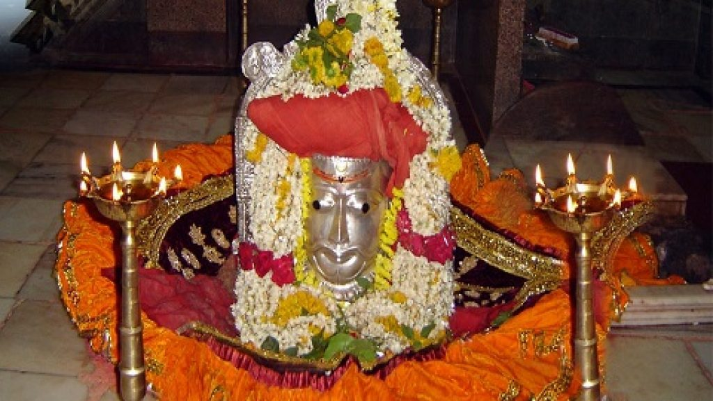
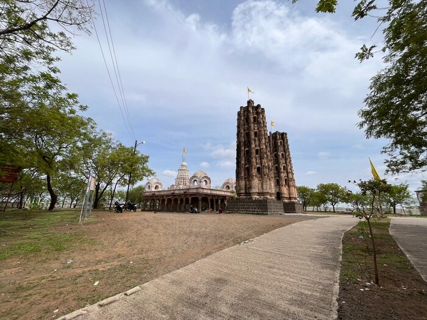

कंकालेश्वर मंदिर

कंकालेश्वर मंदिर महाराष्ट्रातील बीड शहरामध्ये गोदावरी नदीच्या एका उपनद्याच्या काठी वसलेले आहे. हे मंदिर बीडच्या मध्यवर्ती भागाजवळ असून ऐतिहासिक आणि धार्मिक दृष्टिकोनातून खूप महत्त्वाचे आहे. कंकालेश्वर मंदिर हे १४व्या शतकात यदव वंशाच्या कालखंडात बांधण्यात आलेले मानले जाते. काही इतिहासकारांच्या मते हे मंदिर हेमाडपंथी शैलीत बांधले गेले आहे, जी वास्तुशैली यदव काळात विशेष प्रसिद्ध होती.ही शैली मजबूत दगडी रचनेसाठी ओळखली जाते आणि विशेषतः सिमेंट किंवा चुना न वापरता दगडावर दगड बसवून बांधकाम केले जाते. या मंदिराच्या स्थापत्यशैलीवरून असेही वाटते की याचे बांधकाम हेमाडपंताच्या आदेशाने किंवा देखरेखीखाली झाले असावे.
श्री वैजनाथ मंदिर, परळी

परळी वैजनाथ मंदिराचा इतिहास सांगते की, रानी अहिल्याबाईंनी परळी वैजनाथ मंदिर पुन्हा 1700 च्या सुमारास पुनर्निर्मित केले. या मंदिराशी दोन लोकप्रिय प्रख्यात जोडलेले आहेत. एक पौराणिक कथा अमृत व राक्षस राजा रावण आणि शिव यांच्या स्वभावाविषयीची इतर वार्तांबद्दल बोलते.
परळी वैजनाथ मंदिराचा इतिहास सांगते की, रानी अहिल्याबाईंनी परळी वैजनाथ मंदिर पुन्हा 1700 च्या सुमारास पुनर्निर्मित केले. या मंदिराशी दोन लोकप्रिय प्रख्यात जोडलेले आहेत. एक पौराणिक कथा अमृत व राक्षस राजा रावण आणि शिव यांच्या स्वभावाविषयीची इतर वार्तांबद्दल बोलते.
सत्तर फुटी दीपमाळ

बीड शहरातील सत्तर फुटी दीपमाळ ही एक ऐतिहासिक आणि सांस्कृतिक खूण आहे, जी खंडोबा मंदिरासमोर स्थित आहे. ही दीपमाळ शहराच्या सांस्कृतिक आणि ऐतिहासिक वारशाचा एक महत्त्वाचा भाग आहे.
स्थान: ही दीपमाळ बीड शहरात खंडोबा मंदिराच्या समोरील बाजूस आहे.
महत्व: ही दीपमाळ बीड शहराच्या ऐतिहासिक आणि सांस्कृतिक ओळखीचा एक भाग आहे
ऐतिहासिक खंडोबा मंदिर:

बीडमधील खंडोबा मंदिराचे वैशिष्ट्य म्हणजे त्याचा इतिहास, ज्याचा संबंध बीड शहराच्या प्राचीन आणि मध्ययुगीन काळाशी आहे. या मंदिराच्या समोरील दीपमाळांचा इतिहास स्थानिक इतिहासकार क्यूआर कोडद्वारे लोकांपर्यंत पोहोचवत आहेत. हे मंदिर, बीड शहराच्या ऐतिहासिक आणि धार्मिक वारसाचा एक महत्त्वाचा भाग आहे, आणि या शहराच्या विविध कालखंडातील घडामोडींचे ते साक्षीदार आहे.
ऐतिहासिक महत्त्व: बीड शहराचे नाव पूर्वी ‘चंपावतीनगर’ होते आणि खंडोबा मंदिराचा इतिहास या शहराच्या यादवी आणि तुघलकी काळाशी जोडलेला आहे.